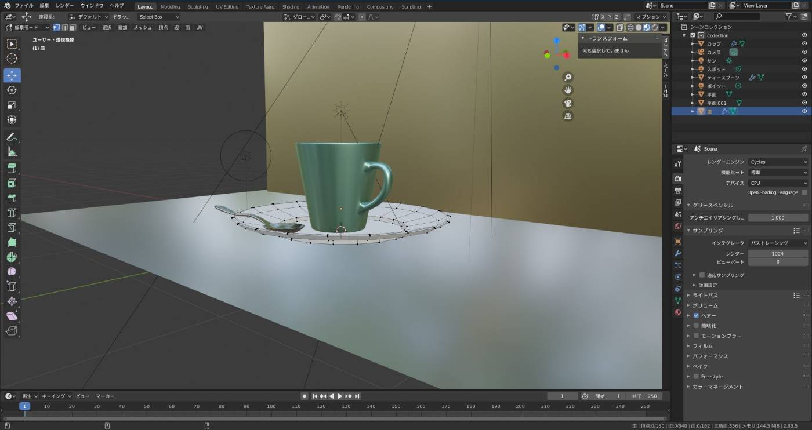

修猷館高校 映画制作部
ツイッター
活動内容
修猷館高校映画製作部では、毎月1本のショートムービーの作成をしつつ、「NPO法人映画甲子園主催高校生のためのeiga worldcup」で最優秀賞を取ることを目標とし、
毎週木曜日に活動をしています。
また最近は3DCGソフトのBlenderを活用して編集を行ったり、
 新型コロナウィルス対策のため、部会は部室ではなくLINE上で行ったりしています。
また、修猷大文化祭のオープニング映像を撮ったりしています。
実績
いぶすき子ども映画祭２０１３ 奨励賞 作品名「Before too late」いぶすき子ども映画祭２０１４ 指宿市議会議長賞（準グランプリ）作品名「きっといつか」（アジア国際子ども映画祭２０１４にノミネート）
いぶすき子ども映画祭２０１６ 審査員特別賞 佐藤賞 作品名「ハルに向かって」
eiga worldcup ２０１４ 地域部門 奨励賞 作品名「共立-ともだち-」
eiga worldcup ２０１６ 自由部門 佳作 作品名「雨やさめの夜」
eiga worldcup ２０１６ 地域部門 入選 作品名「私の町」